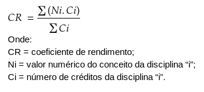

O que é Coeficiente de Rendimento?
É a média ponderada das notas de suas disciplinas durante o período letivo. Normalmente, o critério 'peso' é definido utilizando a carga horária.
Este coeficiente expressa a nota média que o aluno tira em uma prova. Por exemplo: Se o seu CR é 8.5, significa que, em média, a cada prova realizada, sua nota é 8.5. Este coeficiente é medido através da seguinte fórmula:
